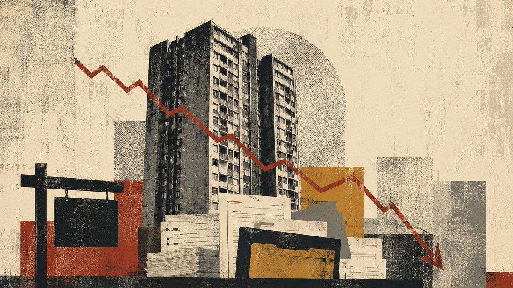

Leasehold: The Market Is Finally Pricing In The Risk

In this article
- What exactly is being priced
- The tribunal record shows the mechanism, not just the grievance
- Government agrees with the diagnosis
- The politics of waiting
- The two-tier market government has already warned about
- Beyond "profit": what's actually driving the incentives
- What would actually fix it
- Conclusion
Government has diagnosed what's wrong with leasehold. The slow, cautious transition to fix it may itself be part of what's now showing up in flat prices.
Average house prices in Britain have risen 43% since 2016. Flats have managed 10%. In England during 2025, 80.5% of leasehold flats listed for sale had still not sold within six months; in London, closer to 87%. Zoopla, asked to explain the gap, names several factors, but puts uncertainty around leasehold in England among them.
It would be too easy to call this a bubble bursting. A bubble implies buyers were wrong about something and are now correcting their mistake. What seems to be happening to flats is closer to the opposite: buyers, lenders and conveyancers are getting better at pricing something that was true all along, that a leasehold flat is not just rooms and a view, but a stream of future liabilities whose size someone else gets to determine.
A leasehold flat is not just rooms and a view, but a stream of future liabilities whose size someone else gets to determine.
What exactly is being priced
Leasehold's defect isn't that someone profits from it. It's structural: the party who controls building expenditure and the party who is contractually on the hook to pay it are not the same party. That separation is what creates room for costs to be passed through with limited scrutiny, for management incentives to weaken, and for disputes over what a lease actually permits to end up expensive and slow to resolve, because that dispute, when it happens, usually has to go through the First-tier Tribunal.
This isn't a fringe arrangement. England has an estimated 4.90 million leasehold dwellings, around 20% of all housing stock, rising to 39% in London. More than 98% of flats currently offered for sale are still sold leasehold, out of roughly 30,000 to 40,000 new flats completed each year across England and Wales. None of the government's reform programme has yet touched that flow in any meaningful way.
The tribunal record shows the mechanism, not just the grievance
Three recent cases illustrate the structural problem without needing to allege bad faith on anyone's part.
In Notting Hill Home Ownership v Samoail, Issa & Ors (Upper Tribunal, June 2026), a housing-association landlord, itself charged under a headlease for services across a wider development, tried to pass those upstream costs down to shared owners in the affordable-housing block. The tribunal found most of the charges weren't recoverable under the sub-leases at all: they related to services and areas the shared owners couldn't access or benefit from. It's the clearest illustration available of what happens when a landlord sits in the middle of a cost chain it didn't design and passes charges downward by default rather than by right.
Spender v FIT Nominee Ltd, concerning long-running service-charge and security-system disputes at St David's Square, spent years moving between the FTT, the Upper Tribunal and the Court of Appeal, with the Court of Appeal ultimately sending parts of it back for reconsideration. Whatever the eventual outcome, the case is itself evidence: this is what "you have a legal right to challenge the bill" looks like in practice, and it is not quick or cheap.
And leaseholders don't always win. In Bradley/Rhodes v Abacus Land 4 Ltd, the Court of Appeal restored a landlord's position after the Upper Tribunal had favoured the leaseholders, on the basis that a tribunal cannot simply substitute its own view of fairness where a lease gives the landlord a discretion to be exercised reasonably. That matters for the argument, not against it: the FTT is not a general-purpose ombudsman. Outcomes turn on drafting, statutory tests and the standard of review, which is itself part of the risk a buyer is taking on, whether or not they know it.
Government agrees with the diagnosis
What makes 2026 different from thirty years of leasehold complaint is that the state has stopped arguing about the underlying mechanism. The government's own impact assessment for the draft Commonhold and Leasehold Reform Bill names limited management control, unpredictable service charges and misaligned governance as leasehold detriments in its own analytical language, and says they can undermine affordability, mortgageability and consumer trust. That is not a campaigning claim. It's the department's working assumption.
The proposed fix is substantial: commonhold as the default tenure for new flats, an effective ban on new leasehold sales, ground rent capped at £250 a year on a 40-year taper to zero, and reforms to service-charge transparency and forfeiture. The ground-rent taper is explicitly designed with "system stability" in mind; the impact assessment discusses the risk that an immediate move to a peppercorn could create insolvency and building-safety consequences for some freeholders, and gives them decades to adjust.
That's a defensible trade-off in isolation. The question the article world hasn't really asked is what forty years of "stability for freeholders" costs the people who own the flats in the meantime.
The politics of waiting
Ministerial sympathy for reform isn't really in question. Campaigners have publicly welcomed Angela Rayner's return to the housing brief and Matthew Pennycook remaining in post, continuity that matters given how technically dense this reform is. But sympathy isn't legislation, and the gap between the two has just widened rather than narrowed. In a letter to the Housing Committee on 10 July 2026, Pennycook confirmed that restrictions imposed during the prime-ministerial transition had prevented the department responding to committee scrutiny on schedule, with the substantive Bill now expected only after the summer recess. Separately, several groups of freeholders and investors, not housing associations, have live appeals against elements of the 2024 Act framework following an unsuccessful High Court challenge in October 2025. Both threads point the same way: further delay, for different reasons, compounding.
Leaseholders can reasonably credit ministers who understand the problem while still judging reform by the law that actually reaches the statute book and comes into force, and right now, very little of it has.
The two-tier market government has already warned about
It would overstate the case to say existing leaseholders get nothing from the reform package; ground rent caps, the abolition of forfeiture, and service-charge transparency measures all apply to them. What they don't get is the structural fix. Conversion from leasehold to commonhold is not automatic; the Housing, Communities and Local Government Committee has said as much directly, warning that gaps in the Bill could leave existing leaseholders "trapped in a two-tier market" against newer commonhold stock. Pennycook has described leasehold as a tenure that will "wither on the vine." Fair enough, but if it's withering on the vine, someone still owns the leaves, and is trying to sell them into a market that already knows what's coming.
If it's withering on the vine, someone still owns the leaves, and is trying to sell them into a market that already knows what's coming.
That's arguably the sharpest version of this argument: government has correctly identified leasehold as a tenure with a use-by date, and the market, mortgage lenders, conveyancers, cautious buyers, is starting to treat pre-reform leasehold stock accordingly, years before the replacement is actually available to most of the people who'd need it.
Beyond "profit": what's actually driving the incentives
It's tempting to point at housing-association surpluses and call it profiteering. That's not quite right, and it's an easy claim to rebut: an operating surplus reinvested into new and existing stock is not a shareholder dividend, and the sector's accounts show as much, an operating surplus on social-housing lettings of roughly £4.7 billion in the latest year, the overwhelming majority of it attributable to core social housing activity.
The sharper version of the argument is commercialisation, not greed. A large housing association still has to service debt, protect its credit rating, fund building-safety remediation and hit development targets, obligations that create genuine institutional pressure toward recoverable income and tight cost allocation, whatever the organisation's charitable purpose. Layer that onto leasehold's structural separation of cost-control from cost-liability, and you get exactly the pattern the Notting Hill Home Ownership case shows: a landlord passing on upstream costs by default, because the incentive to scrutinise them before passing them down is weaker than the incentive to recover them.
What would actually fix it
Two policies, treated as complementary rather than competing: substantially more directly council-owned Social Rent housing for renters, so public subsidy builds a durable public asset with a clear accountability chain; and commonhold made the genuine practical default for buyers, so the people paying for a building's upkeep are the people who control it. Neither is a guarantee of good management on its own, councils mishandle repairs and major works too, and commonhold blocks can be badly run, but both remove the specific structural flaw at the centre of this: a party controlling expenditure who isn't the party bearing the cost.
Conclusion
The question is no longer whether leasehold will be reformed. Government, the courts and the market are independently converging on the same diagnosis, from three different directions. The live question is who bears the cost of the years in which everybody agrees the old system is ending but the new one hasn't arrived yet, and whether a transition designed to protect stability for freeholders has quietly become a source of instability for the leaseholders it was supposed to outlast.